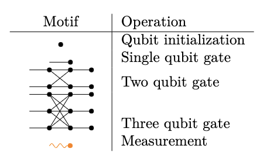
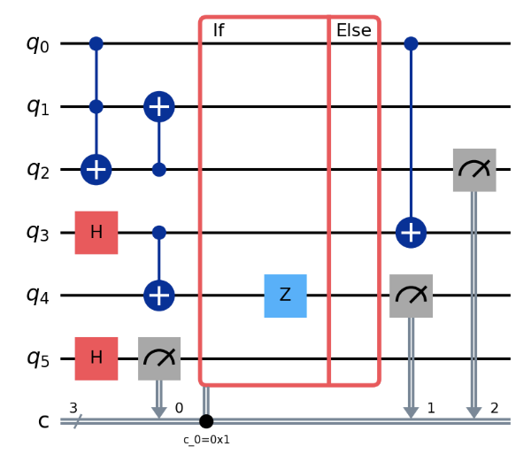
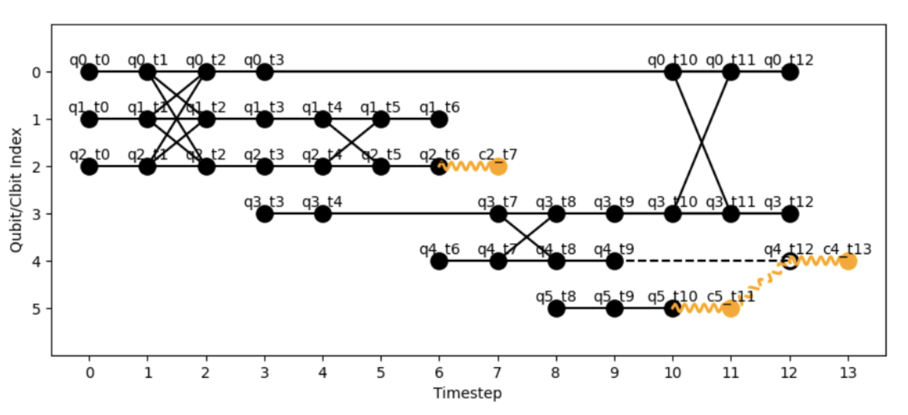

Computational models
Quantum computation can be performed with various computational models that have different instruction sets, such as quantum circuits (which perform computation through gates) or measurement based patterns (which perform computation through corrections). The diversity between these models can be attributed to hardware constraints as well as to the age of the field. Although they are all equivalent and computations can theoretically be translated accross them, this process is inneficient and hard to due to a lack of clear set of cross-model translators.
HDHs were designed to abstract all the models into a unified framework. As such, they are model agnostic and can be constructed from any set of instructions. In order to facilitate this construction, the HDH library has a set of embedded model mappings which translate instruction sets from popular quantum computational models into reusable HDH motifs.
Circuits
The circuit model is perhaps the most popular quantum computational model, with the exception of photonic qubits, it can be implemented on all universal quantum devices, as is the base of popular quantum software packages such as Qiskit. Mapping a quantum circuit to an HDH comes down to following the mappings in this table:

The following code:
import hdh
from hdh.models.circuit import Circuit
circuit = Circuit()
# Set of instructions
circuit.add_instruction("ccx", [0, 1, 2])
circuit.add_instruction("h", [3])
circuit.add_instruction("h", [5])
circuit.add_instruction("cx", [3, 4])
circuit.add_instruction("cx", [2, 1])
circuit.add_conditional_gate(5, 4, "z")
circuit.add_instruction("cx", [0, 3])
circuit.add_instruction("measure", [2])
circuit.add_instruction("measure", [4])
hdh = circuit.build_hdh() # Generate HDH
fig = plot_hdh(hdh) # Visualize HDH
is equivalent to circuit:

and the HDH:
